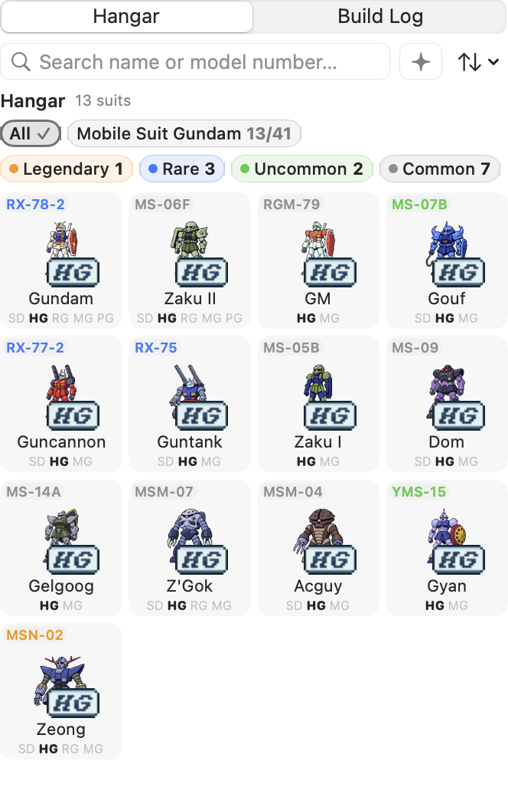

MSTokenBar
Turn your AI coding tokens into Gunpla, right in your macOS menu bar.

- Unbox: the tokens you spend in Claude Code, Codex, Gemini CLI and more open a Kit Box, and a mobile suit comes out.
- Grade up: keep coding and the suit climbs through the kit grades actually released for it, SD to PG.
- Hangar: completed suits are saved by series, and commander and ace customs appear as rare variants.
Requires macOS 14 or later. The app is not notarized, so right-click it and choose Open on first launch.